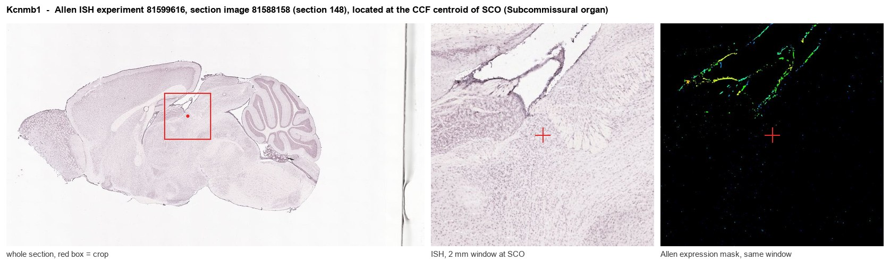
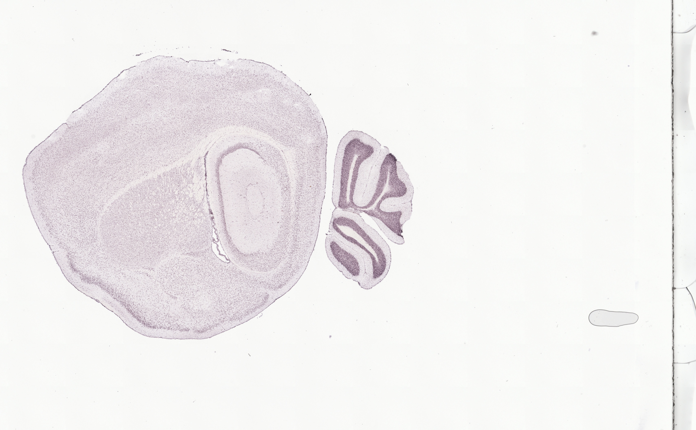
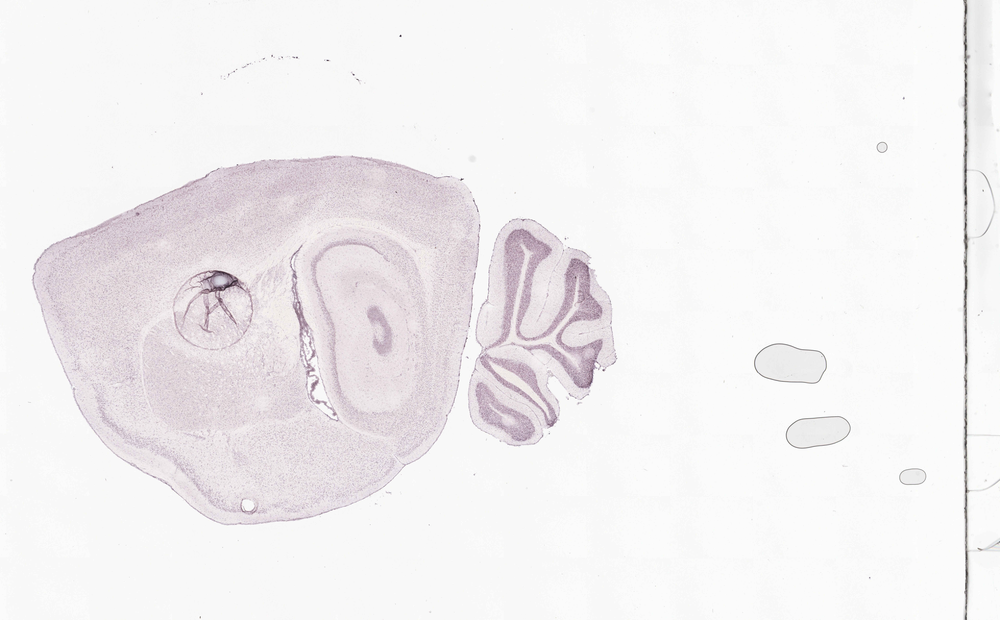
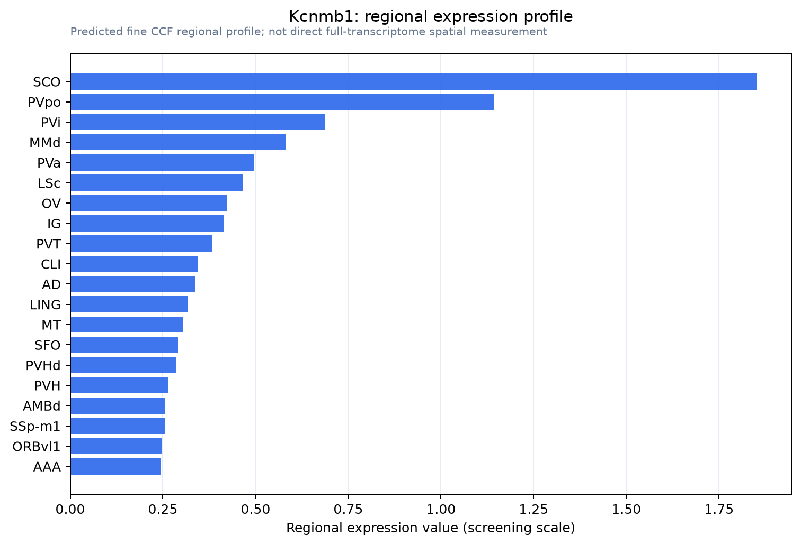

Kcnmb1
Calcium-activated potassium channel subunit beta-1 (BK channel subunit beta-1) (BKbeta) (BKbeta1) (Calcium-activated potassium channel, subfamily M subunit beta-1) (Calcium-activated potassium channel
Spatial tier: STRICT_EXCLUSIVE · Class: ION_CHANNEL · Top region: SCO (Subcommissural organ) · Positive regions: 6/554
Function in SCO: evidence, prediction, innovation
- Gene function
- Kcnmb1 encodes the beta-1 auxiliary subunit of the large-conductance Ca2+- and voltage-activated potassium (BK, KCa1.1/Slo1) channel. Non-conducting itself, beta-1 raises Ca2+ sensitivity and slows gating of the alpha subunit, is the classic smooth-muscle BK partner, and confers sensitivity to dehydrosoyasaponin-I and lithocholic acid.
- Region function
- The subcommissural organ is a secretory ependymal gland under the posterior commissure at the third-ventricle/aqueduct junction, releasing SCO-spondin into CSF to form Reissner's fibre and shaping aqueduct patency, CSF flow and axial morphogenesis.
- Published in this region
- inferred No region-specific literature found. Closest: Kcnmb1-null mice lose BK-dependent feedback in arterial smooth muscle, including cerebral arteries, and become hypertensive (Brenner et al. 2000); BK broadly sets CNS excitability and secretory tone (Contet et al. 2016); ependymal expression is only atlas-level (Zeisel et al. 2018; Zhang et al. 2023).
- Predicted function
- Prediction: beta-1-containing BK channels repolarise SCO ependymal cells after Ca2+-mobilising stimuli, sustaining anion/fluid secretion and limiting Ca2+ overload during SCO-spondin exocytosis. Deletion should leave BK current far less Ca2+-sensitive, altering ciliary beating and secretion; paxilline or iberiotoxin should change Reissner's fibre output. Aqueductal arterioles are a vascular confound.
- Innovation
- ★★★★☆ 4/5 BK beta-1 is well characterised in smooth muscle but unstudied in ventricular secretory epithelium, a clean testable gap.
- Tools
- Kcnmb1-null (Kcnmb1tm1Rbr, Aldrich/Brenner) and Kcnmb1-flox mice; Sspo-Cre/Sspo-CreER; blockers paxilline, iberiotoxin; activators dehydrosoyasaponin-I, lithocholic acid; Kcnma1 conditional alleles; anti-KCNMB1 antibodies.
- References
Direct evidence located at the region

Allen ISH experiment 81599616, section image 81588158 (section 148): the section that contains the CCF centroid of Subcommissural organ according to the Allen image-to-atlas alignment (reference_to_image), with a 2 mm window around that point. Left: whole section, red box = window. Middle: ISH signal. Right: Allen's expression-mask view of the same window. open this image in the Allen viewer
Direct spatial evidence



Regional expression figure

Predicted WMB × fine-CCF profile; not direct full-transcriptome spatial measurement.
Spatial profile
Evidence and specificity
- Evidence status
- PREDICTED_FINE
- Direct sources
- None; predicted localization only
- Exclusive threshold
- 12 positive regions out of 554
- Spatial specificity
- 0.369
- Top-region fraction
- 0.147
- Filter status
- PASS
Interpretation limits
- Cell-type-to-region projection is imputed expression, not direct spatial measurement.
- Adult reference atlases do not establish stability across age, sex, strain, state, or disease.
- Transcript abundance does not guarantee protein abundance or genetic-tool performance.